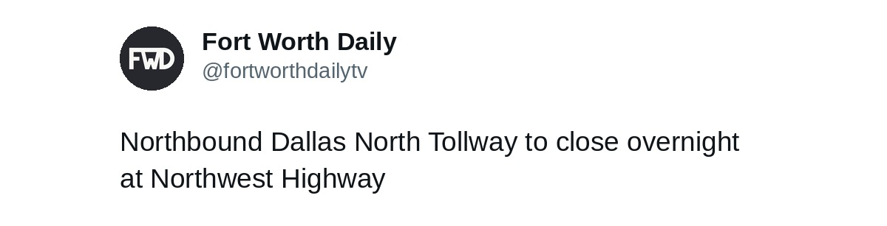

FWD
Fort Worth Daily
Just now · 🌎 · traffic · template writer
Just now · 🌎 · traffic · template writer
Northbound lanes of the Dallas North Tollway (DNT) at Northwest Highway will close Tuesday night for message board work. The closure begins at 10 p.m. on Tuesday and ends Wednesday morning at 5 a.m.

FWD
story + scoring
{
"source": "FOX 4 Dallas-Fort Worth",
"kind": "rss",
"score": 0.9052,
"relevance": 2,
"url": "https://www.fox4news.com/news/northbound-dallas-north-tollway-close-overnight-northwest-highway",
"image_license": "card",
"image_credit": "Card: FWD"
}